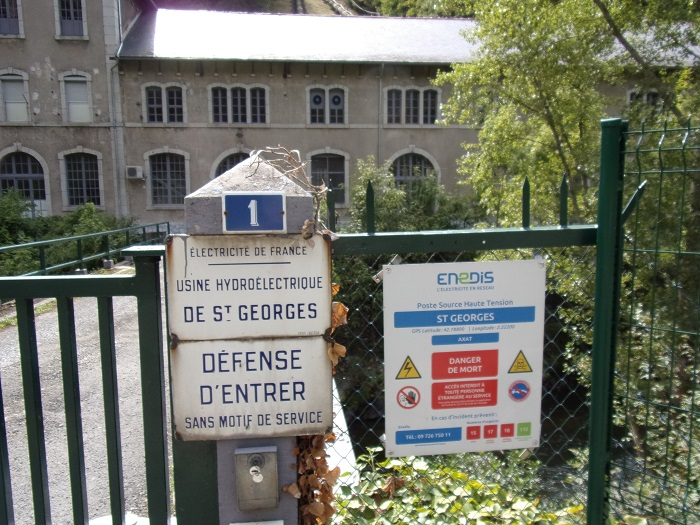
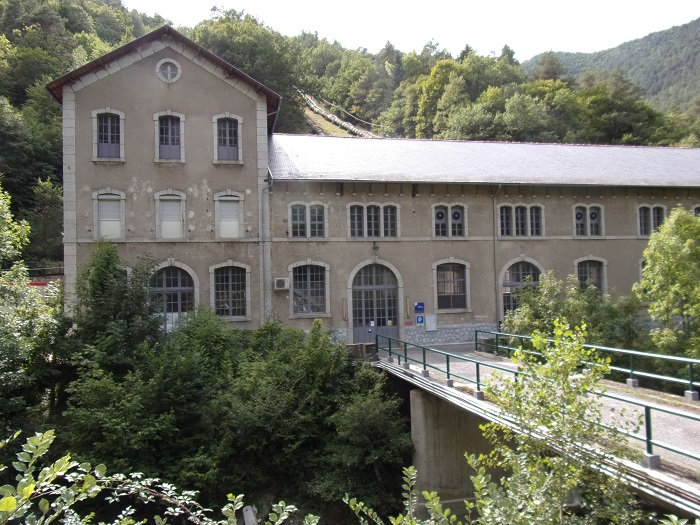
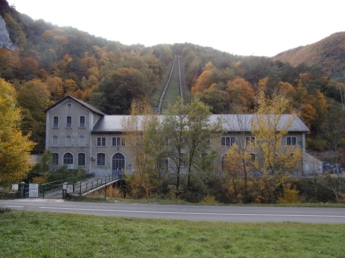
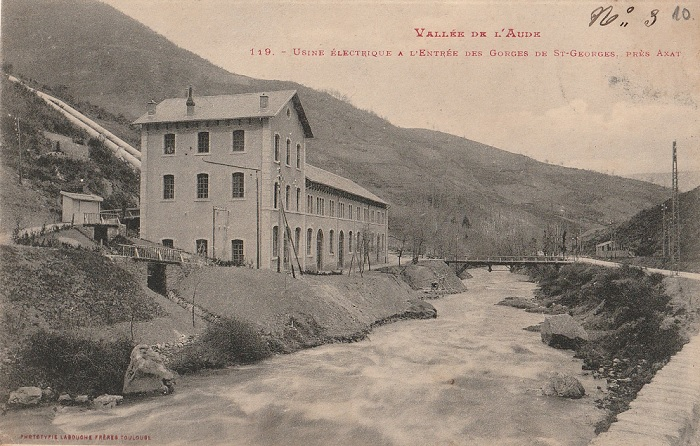
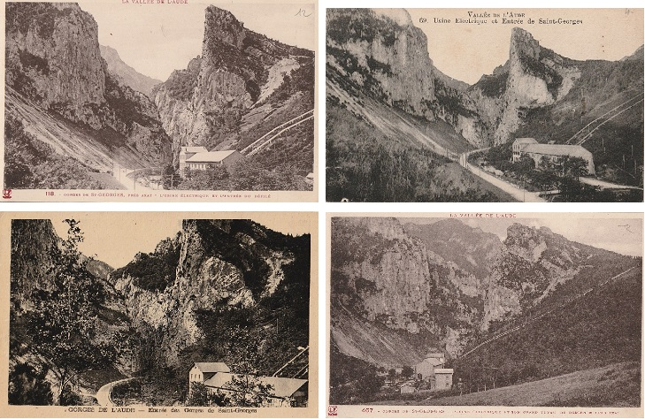
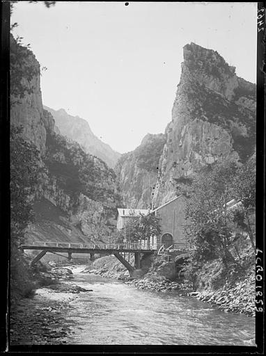

Juste avant l'entrée des Gorges de Saint-Georges en venant d'Axat, une usine hydro-électrique a été inauguré à Noël 1900.
Cette usine a été la première à transformer l'électricité en haute tension pour son transport vers les consommateurs.
Un plaque commémorative placée à l'entrée de l'usine retrace cet exploit
« Le 25 Décembre 1900, Joachim ESTRADE ingénieur des arts et métiers (1857-1936) mit en service à partir de cette usine la première distribution d'énergie électrique à grande distance (sous la tension de 20000 volts, courants triphasés 50 périodes). Dés 1901 il desservait plus de cent communes, plus de cent mille habitants dans un rayon de cent kilomètres »
L'usine située sur la rive gauche de l'Aude ne peut être atteinte depuis la route RD 118 que par un pont normalement fermé au public
Mais l'usine peut être visitée - en saison estivale elle peut-être ouverte aux voyageurs du train touristique. Ce renseigner auprès du TPCF pour les modalités.
La prise d'eau, permettant de produire l'électricité, est située à Gesse (hameau de Bessède-de-Sault) à 6 kilomètres en amont de l'Aude et dévale par des canalisations directement sur l'usine
 Derrière le bâtiment, on peut distinguer 2 des canalisations amenant l'eau captée à Gesse
Le pont canal de Bayra permettant l'alimentation en eau de l'usine a fait l'objet de réparations urgentes en 2014
Voir sur le sujet le dossier EDF de présentation générale des travaux présentant plusieurs photos de l'ouvrage et le dossier du maître d'oeuvre GETEC Sud-Ouest de réalisation des travaux
Cette usine est remarquée par la presse
Bulletin de la Société d'études scientifiques de l'Aude de 1902
[Cet article relate une excursion du 23 Juin 1901 du SESA qui va visiter l'usine de la prise d'eau à Gesse jusqu'à son utilisation dans l'usine, il est agrémenté de photos (positionnées toutes ensembles au milieu de l'article), Je reproduis ici une grosse partie de l'article]
Après une heure d'un voyage enchanteur — 6 à 7 kilomètres — nous arrivons au barrage de Gesse, point extrême de notre excursion. Là est l'origine du canal d'alimentation de l'usine électrique.

L'Aude, qui prend sa source dans le Capsir à l'altitude 2080m, arrive à Gesse à la cote 550, après un parcours torrentiel de 38 kilomètres, soit une pente de 40m par kilomètre. De Gesse à Axat la rivière reste torrentielle avec une pente de plus de un centimètre et demi par mètre. Son débit est très variable, mais il ne tombe pas au-dessous de 5 à 6m3 par seconde.
L'utilisation de ses eaux était toute indiquée, dans cette région, pour produire une quantité d'énergie suffisamment rémunératrice et justifier la construction coûteuse d'une usine, d'un barrage, d'une canalisation et autres travaux accessoires. C'est ainsi qu'avec moins de 6 kilomètres de canal on a pu obtenir une chute de plus de 100m, produisant une puissance équivalente à 5 et 6.000 chevaux.
L'emplacement du barrage a été choisi en un point qui put donner, par le remous du courant, un bassin réservoir. L'ouvrage a été construit avec une retenue de 2m20, il a 75 mètres de longueur, dont 66m50 forment déversoir, avec vannes de décharge, pertuis de flottage et échelles à poisson.
Il s'appuie sur la rive droite contre le rocher et sur la rive gauche contre le mur de soutènement de la route nationale d'Espagne ; les fondations reposent sur le rocher que l'on a été chercher, sur certains points, à plus de 10 mètres de profondeur. Une maison coquette à un étage a été construite à côté de la route, elle sert de logement au barragiste, lequel peut correspondre avec les mécaniciens de l'usine au moyen d'un téléphone. C'est là que se fait la manœuvre des vannes, au nombre de quatre, du canal d'alimentation, en avant desquelles, une grande grille est posée, servant à empocher les bois ou autres corps flottants de pénétrer dans le canal.
Pour éviter les chutes de rochers et les éboulis qui se produisent fréquemment dans ces parages et qui n'auraient pas manqué d'obstruer le canal, on ne pouvait que le construire en souterrain. Du barrage, le canal passe sous la route et pénètre immédiatement dans la montagne ; il a une section de 2m30 de largeur sur autant de hauteur, le fond et les parois sont recouverts d'une couche de béton et d'un enduit en ciment afin d'empêcher les infiltrations, il a une pente de un millimètre et demi par mètre, ce qui donne à l'eau une vitesse de deux mètres par seconde.
A la suite de cette première partie souterraine, qui n'a pas moins de 5.400 mètres de longueur, les éboulis étant peu à craindre, le canal a été établi à ciel ouvert ; mais comme on ne pouvait songer à le creuser dans un sol perméable sans maçonner la cuvette, il a paru plus économique de construire un aqueduc en béton armé.
Supporté par des piliers, ce qui permet aux terres entraînées en temps d'orage de passer sous le canal, cet aqueduc est déjà à une hauteur de 90 mètres au-dessus du niveau de la route, d'où on l'aperçoit comme une simple et petite rigole. Il suit les sinuosités du coteau, sa longueur est de 500 mètres, sa largeur 2 mètres et sa profondeur 1m50.
Puis, le canal redevient souterrain sur 300 mètres, il franchit alors un ravin sur un nouvel aqueduc en béton armé, de 200 mètres de long et de 12 mètres de hauteur, pour se terminer par un dernier souterrain de 150 mètres, qui aboutit à une chambre d'eau, ou grand réservoir en maçonnerie, de 12 mètres sur 10 mètres et 2m50 de profondeur. Avant d'arriver à ce dernier réservoir, l'eau traverse deux bassins de décantation avec vannes de vidange, l'un est établi au barrage, à l'origine du canal et l'autre après le petit aqueduc en béton armé. Ce dernier bassin a été construit avec déversoir afin que l'eau ne puisse dépasser un certain niveau dans le canal, le trop plein s'échappe dans le ravin.

De plus, une vanne posée contre la tête amont du tunnel qui fait suite, permet même de rejeter par ce déversoir tout le débit du canal. La chambre d'eau, avec vannes de vidange, est construite à flanc de coteau à 100 mètres au-dessus de l'usine ; c'est de là que partent les tuyaux d'alimentation des turbines.
Ces tuyaux sont scellés dans la maçonnerie, un vannage placé contre leur couverture sert à en réglementer le débit.

Actuellement deux tuyaux en tôle d'acier, de un mètre de diamètre intérieur, arrivent à l'usine, deux autres sont amorcés dans la maçonnerie du réservoir. Une grille est posée en avant des vannes pour empêcher les corps flottants, que le canal aurait pu charrier, de pénétrer dans les tuyaux. Cette conduite sous pression est inclinée suivant la pente du coteau, elle repose de distance en distance sur des socles en maçonnerie, elle a 225 mètres de long, à sa base chacun des tuyaux se bifurque en deux tronçons de 0m80 de diamètre qui alimentent chacun une turbine. Les deux tuyaux principaux font donc mouvoir quatre turbines et les dynamos qui y sont accouplées.
Après la visite du barrage et après avoir assisté à diverses manœuvres, la caravane est revenue vers Axat. Au pont de Bayra, point de départ de l'ancienne route de Roquefort et de Carcanières, un grand nombre d'excursionnistes quittent les voitures et font l'ascension du coteau jusqu'au grand canal en béton armé qui est, comme nous l'avons dit, à plus de 90 mètres au dessus du niveau de la route, pour suivre le canal jusqu'à la chambre d'eau de distribution.
De cette hauteur on a un point de vue grandiose, on aperçoit les gorges de St-Georges, qui ressemblent à un mince couloir dans le fond duquel s'engouffre la rivière d'Aude et se perd la route blanche de poussière qui apparaît comme un filet d'argent.
Arrivés près du petit aqueduc, après avoir contourné un mamelon, nous sommes surpris par la vue d'une grande et mugissante cascade, produite par le trop plein du canal qui s'échappe du déversoir dont nous avons parlé, et rejoint, par sauts gigantesques à travers les roches d'un ravin presque à pic, l'Aude en amont des gorges.
Les travaux exécutés dans ce ravin garni d'arbres et de verdure forment, avec l'aqueduc, la cascade et les rochers, un ensemble réellement merveilleux qu'il est regrettable de ne pas apercevoir de la route.
Nous quittons ce saisissant et pittoresque paysage pour gravir le col de St Georges situé près du sommet de la crevasse. Là, également, on jouit d'un splendide panorama ; au fond de la vallée c'est l'usine, la rivière, la route, le viaduc de Saint-Georges, Axat ; à l'horizon, en face, la forêt des Fanges, à droite, les forets du Bac d'Estable et d'En Malo, à gauche, le plateau boisé de Sault et en arrière les Pyrénées. On reste quelque temps en admiration devant ce tableau grandiose, après quoi il faut songer à opérer la descente; elle s'effectue par un étroit sentier, tracé en lacets, sur le flanc de la montagne, par les ouvriers qui ont été employés à la construction des divers travaux que nous venons de voir et de la chambre d'eau de distribution que nous examinons en passant. Les matériaux et les tuyaux ont été transportés à ces hauteurs et sur ces pentes au moyen d'un plan incliné que l'on voit encore.
Au bas du coteau nous sommes à l'usine hydro-électrique.

Ainsi qu'il a été dit, elle est située un peu en aval des gorges de St-Georges, sur la rive gauche de l'Aude. On y accède de la route par une forte passerelle en bois jetée sur la rivière.
Le bâtiment, entièrement en maçonnerie, est divisé en trois parties : un grand hall central de 50 mètres de longueur, 12 de largeur et 15 mètres de hauteur pour les machines, et deux pavillons extrêmes dont l'un seulement est construit.
Ce pavillon est a deux étages, le rez-de-chaussée est occupé par les transformateurs à haute tension ; au premier sont les tableaux de ces transformateurs et les bureaux ; le deuxième sert de logement aux mécaniciens. Dans le pavillon à construire on établira des ateliers.
L'usine renferme actuellement quatre groupes de machines composés chacun d'une turbine et d'un dynamo ; l'emplacement pour quatre autres groupes a été réservé ; les fondations en sont exécutées jusqu'au niveau du sol et les tuyaux sont amorcés dans le mur de la chambre d'eau ou réservoir supérieur comme nous l'avons vu.


Les dynamos
L'installation de ces machines, dont certaines pièces pesaient jusqu'à seize tonnes, s'est faite au moyen d'un pont roulant s'appuyant sur les murs latéraux du grand hall et pouvant desservir tous les points de la salle.
Les turbines sont du type Pelton ; elles peuvent développer 800 chevaux chacune à la vitesse de 300 tours à la minute avec un débit de 800 litres à la seconde. Elles sont constituées par une roue intérieure à cuillères sur laquelle agissent plusieurs ajutages à ouvertures réglables automatiquement. Un tiroir permet de diminuer ou d'augmenter le débit d'eau dans la turbine : un régulateur agit sur ce tiroir et sur une troisième ouverture qui permet de déverser le trop plein dans le canal de fuite, voire même tout le débit des conduites si l'on veut arrêter le mouvement de la turbine ; de cette façon le coup de bélier, qui se produit dans les tuyaux par un arrêt brusque de courant, est supprimé.
Les turbines et les dynamos sont montées sur le même axe horizontal Les premières attaquent directement par un manchon d'accouplement à courroie les alternateurs triphasés à champ tournant de la dynamo type Alioth, avec excitatrice montée à l'extrémité de l'arbre.
Une dynamo se compose de deux parties principales : d'un champ tournant ou inducteur qui donne naissance au courant, c'est une pièce mobile tournant dans l'induit, carcasse fixe où sont encastrées les bobines induites qui recueillent le courant. C'est de cette carcasse que partent trois câbles de phase se rendant à un tableau de distribution où le courant est mesuré et qui permet de faire le couplage des dynamos.
Les machines établies à l'usine peuvent donner 600 kilowatts sous 2.5oo volts. Le courant est envoyé du tableau de la grande salle dans une batterie de transformateurs surélévateurs de tension installée au rez-de-chaussée du pavillon, lesquels transforment la tension de 2.500 en 20.000 volts : il passe, ainsi modifié, au tableau de distribution de haute tension du premier étage.

Les bobines transformateurs en haute tension
Ce tableau tout en fer, muni de tous ses appareils et de parafoudres, repose entièrement sur un plancher supporté par des isolateurs en porcelaine. Vu le danger qu'il y aurait de manœuvrer à la main les interrupteurs à haute tension de ce tableau, la commande se fait à l'air comprimé, produit par une pompe actionnée par un moteur électrique. C'est de ce tableau que partent les câbles ou feeder portant l'énergie ou le courant dans les diverses régions du département.
Pour distribuer cette énergie on emploie un feeder composé de trois câbles de 48 m/m formant une ligne aérienne qui, après avoir traversé la forêt des Fanges, Saint-Louis, Bugarach, Fourtou, franchissant vallons et montagnes, aboutit à Fabrezan, à 68 kilomètres de l'usine.
C'est à Fabrezan qu'a été installé le poste central de distribution. De là des lignes à 16.000 volts rayonnent de tous côtés allant alimenter villes et-villages. Narbonne et Carcassonne reçoivent aujourd'hui le courant de St-Georges. Une centaine de villages sont éclairés ou installés pour l'éclairage. En dehors de l'éclairage la force est distribuée à nombre d'industriels, commerçants et négociants. Diverses communes emploient même des moteurs électriques pour leur adduction d'eau.
Le réseau de lignes comprend actuellement un développement de plus de 500 kilomètres qui sera doublé sous peu.
Les câbles reposent sur de forts poteaux en sapin espacés de 50 en 50 mètres, dans les contours ils sont même plus rapprochés, et munis d'isolateurs en porcelaine à triples cloches; ces poteaux portent également les fils téléphoniques qui mettent en communication le poste de Fabrezan avec l'usine de Saint-Georges. Lors de la mise en exploitation de la ligne, un phénomène curieux s'est produit : les isolateurs employés devenaient incandescents et se liquéfiaient même sous l'effet du courant, et cette matière en fusion coulant le long des poteaux les enflammait.
Les isolateurs primitifs ont dû être remplacés par d'autres d'une fabrication spéciale pouvant supporter un courant à 40.000 volts.
Les communes éclairées sont groupées par petit nombre ; le courant pris sur les câbles de 16.000 volts arrive à chacune d'elles à une tension de 5.000 volts dans un poste établi à l'entrée de chaque village. Dans ce poste, le courant triphasé à 5.000 volts se transforme en même courant de distribution à 125 volts, alors non dangereux. C'est avec cette tension que l'éclairage est fait.
Les honneurs de l'usine ont été faits par M. Estrade, Fondateur et Directeur des Sociétés Méridionales d'Electricité et de Transport de Force, et il a donné aux visiteurs tous les renseignements qui pouvaient les intéresser sur la marche de l'usine. A cette occasion, et comme membre de la Société d'Etudes Scientifiques, il a eu l'amabilité et la gracieuseté d'offrir du Champagne, dans la grande salle des machines, toute décorée de verdure, pendant que les turbines et les dynamos marchaient à leur maximum de vitesse, produisant un ronflement étourdissant mais imposant.
Malgré le bruit, notre Président, M. Mullot, a porté un toast à M. Estrade et a prononcé le discours suivant : « Au nom de la Société d'Etudes Scientifiques de l'Aude, au nom de ses membres ici présents, au nom des excursionnistes qui ont bien voulu se joindre à nous, permettez moi de vous adresser quelques remerciements pour votre si cordial accueil.
« Grâce à votre dévoué concours, et au concours empressé des Ingénieurs et du personnel de la Société, il nous a été permis de connaître les plus beaux travaux d'une œuvre aussi grandiose qu'utile.
« Il y a quelques années à peine, il eût été impossible de prévoir qu'à travers ces montagnes abruptes et sauvages, où la forêt règne en maîtresse, la création d'un canal débouchant par une chute de plus de cent mètres de hauteur, porterait, avec le chemin de fer, la vie et l'aisance dans ces contrées désolées et seulement connues des touristes et des naturalistes, si nombreux parmi nous.
« Il eût été impossible de prévoir que de ces arides régions partiraient la force et la lumière vers les fertiles plaines du Bas-Languedoc, et leur procureraient de nouveaux éléments de richesse, réservés jusqu'à présent aux villes de notre France tant aimée.
« La conception, comme l'exécution de l'œuvre vous appartient : il ne saurait y avoir ici des compétitions comme jadis, et encore dans le siècle passé entre les descendants de Riquet et d'Andréossy.
« Votre colossale entreprise, mon éminent collègue, est encore unique dans le territoire de la République. D'autres suivront. Qui de nous n'a entendu parler de créations de barrages en projet, à Puyvalador et dans la Montagne-Noire, dans le même but et les mêmes conditions.
« Mais vous resterez le premier initiateur du transport de la Force par l'Electricité à grandes distances, et le bienfaiteur de ce pays.
« Je bois, mon cher collègue, à la pérennité de votre œuvre, je bois à l'éminent Directeur de la Société de Transport de Force. »
Par quelques mots, M Estrade a remercié M. Mullot de ses flatteurs compliments.
Bulletin de la Société de géographie de Toulouse de 1902
A la sortie des Gorges de Saint-Georges, on a construit une usine hydraulique qui utilisera une chute de cent mètres, obtenue en dérivant les eaux de l'Aude, à cinq kilomètres en amont. Cette chute pourra développer, suivant le débit de la rivière, une force motrice de 4.000 à 6 000 chevaux vapeur qui sera utilisée pour produire de l'énergie électrique destinée à alimenter un réseau dont les deux branches principales aboutiront à Carcassonne et à Béziers et dont les ramifications couvriront foute la plaine des environs de Narbonne.
Annuaire du club alpin français de 1903
Au-dessous des ruines d'Usson, au confluent du ruisseau de la Guette et au milieu de l'épaisse forêt de Gesse, un important barrage capte les eaux de l'Aude, puis une canalisation souterraine les conduit à 6 kilomètres de là, Près d'Axat, où elles alimentent, par une chute de 103 mètres, les turbines d'une usine électrique qui fournit la force motrice et l'éclairage à plus de cent villes et villages de l'Aude et de l'Hérault, jusqu'à Béziers.
Rien n'est plus impressionnant que la visite de l'usine. Le sol tremble, les grondements de la chute et les ronflements des dynamos vous assourdissent, produisant une force de 20,000 volts, que deux mécaniciens règlent et dirigent tranquillement vers les fils ténus qui s'en vont au long des routes.
Et, comme contraste absolu entre les perfectionnements du progrès et les splendeurs de la nature abrupte, l'usine est assise à la base d'une aiguille majestueuse, à pic, qui ferme la gorge de Saint-Georges, défilé étroit dont les parois resserrées, escarpées comme des falaises, enferment encore l'Aude dans le fond d'une brèche en zigzags que suit difficilement la route. On vient d'admirer la civilisation dans la fièvre intense d'une usine, et on se trouve quelques mètres plus loin perdu dans les profondeurs sauvages d'un abîme grandiose...
1905-06-01
Bulletin du Syndicat d'initiative de Carcassonne et de l'Aude2
PRODUCTION ET DISTRIBUTION De l'énergie électrique sous 20.000 volts dans le département de l’Aude (Usine des Gorges de St-Georges PAR E. ESTANAVE Docteur ès-sciences
La science a marché, les machines ont été perfectionnées, des machines à courant continu on a passé aux alternateurs. Mais l’une des gloires de la fin du XIX* siècle a été le transport à grande distance de l'énergie mécanique par l'intermédiaire de l’électricité. Cet important problème a été économiquement rendu possible à l’aide des courants alternatifs, (courants triphasés). C’est une solution de ce vaste et intéressant problème que présente l’usine de St-Georges que nous allons visiter. Mais cette usine, qui emprunte à une chute d’eau de 101 mètres la force pour faire tourner ses machines, est établie dans une contrée si pittoresque, la ligne qui distribue le courant de l’usine aux divers centres d’utilisation traverse une région si montagneuse, qu’il me paraît utile de dire quelques mots pour montrer les difficultés sans nombre qu’il a fallu surmonter. En quittant la ville de Quillan pour remonter jusqu’à l’Usine St-Georges, la route s'engage dans le défilé de Pierre-Lys.[...]

La route suit la rive droite de la rivière. Il a fallu, pour la tracer comme à Pierre- Lys, la tailler dans le roc vif, au flanc de la montagne en laissant la roche surplomber en demi-tunnel sur la tête du voyageur. Rien ne saurait rendre l’impression, mélée d’une sorte de crainte que l’on éprouve en franchissant ce merveilleux passage qui est cependant moins long que le défilé de Pierre-Lys. C’est à l’entrée de ces gorges qu’est établie l’usine. Après ce passage, la vallée s’élargit en forme de cirque, et l’on arrive au village de Gesse où est établi le barrage d’où part le canal de dérivation amenant l’eau à l’Usine.
Afin de rendre plus accessible au lecteur le fonctionnement dans la production et la distribution de l'énergie électrique de l'usine Saint-Georges. J'ai effleuré la partie technique en écartant les difficultés qui auraient pu nuire a la clarté de l’exposition. Dans toute production industrielle de l'électricité on transforme le travail mécanique en énergie électrique à l'aide de dynamos. L'énergie mécanique nécessaire est tantôt empruntée a la houille dans les machines à vapeur, tantôt aux chutes d'eau dans les turbines. Aussi, par comparaison, on a donné le nom de houille blanche aux chutes considérées comme sources d'énergie. Cette dernière est de beaucoup la plus économique, la nature nous la fournit, et nous n’avons à supporter que les frais d'installation. Mais il faut prendre la chute où elle se trouve et souvent l'utilisation de l’énergie électrique recueillie se fait à une grande distance du lieu de production, Ici se présente donc ce problème dont la solution est une des gloires du XIX e siècle : Le transport de force à distance par l’électricité. La solution en a été rendue pratique à l’aide de courants alternatifs dont je dirai un mot.

Une installation électrique de transport d'énergie à distance comprend :
1° Une force motrice pour mettre en marche les machines génératrices.
2° Les générateurs d’électricité (alternateurs).
3° Des transformateurs pour élever la tension du courant produit par les machines afin de rendre cette énergie électrique économiquement transportable.
4° La ligne.
5° Des transformateurs au lieu d’utilisation pour ramener la tension à des valeurs utilisables.
6° Des récepteurs utilisant cette énergie, (lampes, moteurs, etc.).
1° Force motrice
L’usine de Saint-Georges utilise comme force motrice une chute d’eau d’environ 101 m. de hauteur. L'eau est captée à l’aide d'un barrage établi sur la rivière d’Aude un peu au-dessous du village de Gesse, à environ 60 km. des sources de l’Aude. Ce barrage, en forte maçonnerie, forme un déversoir de 40 m. de longueur et possède deux vannes de décharge. Le régime de l’Aude est torrentiel et par suite assez inégal ; à Gesse pendant dix mois environ de l’année le débit est de 6 mc. Du réservoir que forme le barrage part un canal de dérivation amenant l’eau à l’usine. Ce canal, dont la longueur totale est de 5.500 m., est à l’air libre sur 1.500 m. de son parcours. Sur 4 km. il est souterrain. Il est inutile de dire que les difficultés de forage ont été nombreuses. Sa pente est uniforme et de 1,6m/m., par m., sauf dans la partie à l’air libre où elle a été accentuée en vue de réduire la section de cette partie du canal qui est en ciment armé et montée sur des poteaux également en ciment armé. La section de la partie souterraine est sensiblement un carré de 2 m. de côté. L’eau arrive à environ 200 m. de l'usine dans un déversoir que suit immédiatement la chambre de retenue d’eau. Enfin de cette chambre, munie de grilles et de vannes, partent deux conduites forcées, qui amènent l’eau à l’usine établie à l’entrée des Gorges de St-Georges. Ces conduites en tôle d’acier de 1 m. de diamètre se bifurquent à 12 m. de l’usine en deux tuyaux de 0 m. 70 de diamètre, alimentant chacun une turbine. Il passe environ 1.600 litres d’eau à la seconde à la vitesse de 2 m. dans chacune des deux conduites. L’eau amenée à l’usine est reçue par quatre turbines à axe horizontal du genre Pelton fournies par la Société des ateliers de construction de Vevey. Ces turbines peuvent développer normalement 800 chevaux. Un régulateur automatique permet la plus ou moins grande introduction d’eau. Un régulateur de pression commandé par le régulateur de vitesse empêche la surpression dans les conduites de dépasser 10 p. 100. Ces turbines, dont le rendement à pleine charge est de 77 p. 100, attaquent directement les alternateurs au moyen de manchons élastiques faisant volant.
2° De générateurs d’électricité. (Alternateurs).
Tout générateur industriel d’électricité est basé sur l’induction. Sans entrer dans des détails on peut imaginerce qu'est un alternateur. Considérons pour cela un anneau de fer sur lequel on a enroulé 3 bobines placées à 120 degrés. Si un aimant tourne autour du centre de l'anneau et dans le plan de l'anneau, il induit, c’est-à-dire il fait naître dans chacune des trois bobines un courant électrique. Ces courants sont identiques au temps près, puisque le mouvement de l’aimant se reproduit successivement devant les trois bobines. Les électriciens disent que ces trois courants sont décalés les uns par rapport aux autres de 1/3 de période. Le mot période désignant la durée d’une révolution complète de l’aimant. On dit encore que ces trois courants sont au même instant dans une phase différente ou qu’on a des courants polyphasés, (triphasés). Les alternateurs se composent d'un volant en fonte portant des dents autour desquelles s'enroulent des bobines. Ces bobines parcourues par un courant continu produit directement par une petite dynamo (excitatrice) portée par l’arbre du volant, sont des électro-aimants et jouent le rôle de l'aimant dont j'ai parlé, (inducteur). Les trois bobines de tout à l'heure sont fixées à une carcasse de fer où l’on a pratiqué des encoches enroulées préalablement sur un gabarit spécial. Elles constituent l'induit. En réalité il y a trois séries de bobines formant les trois enroulements de l’induit, les bobines de la première série sont à chaque instant dans le même état électrique elles sont reliées par une de leurs extrémités, de même les bobines de chacune des deux autres séries. Les trois courants alternatifs produits dans chaque série de bobines peuvent être employés individuellement pour produire de la lumière. Il suffit pour cela d'affecter à chaque série de bobine un circuit spécial d’utilisation, ce qui exige six fils de ligne. On a pu réaliser une notable économie en réduisant à trois les fils de ligne, pour cela on a réuni en un point centraKmontage en étoile) une des extrémités de fil de chaque série des trois bobines. Les trois extrémités restées libres sont réunies aux fils de ligne. On peut ainsi monter des lampes à cheval sur deux des trois fils de ligne. Les alternateurs utilisés à l’usine de St-Georges sont du système Alioth bobinés en étoile fournis par la Société d’Applications industrielles(Paris) Ils peuvent fournir largement 700 kilowatts et sont à fer tournant, courant triphasé, 50 périodes, 3000 tours et ont une tension de 2,900 volts. Leur excitatrice est portée par l’extrémité de l’arbre; ce courant d’excitation a une intensité de 25 ampères sous une tension de 60 volts à pleine charge. Le rendement de ces machines est de 93 p. 100. Elles pèsent 35 tonnes dont 12 tonnes, pour la partie mobile. L’usine est prévue pour 8 groupes électrogènes formé chacun d'une turbine et d’un alternateur de 800 chevaux. Actuellement 4 de ces groupes sont en place (fig. 3). A l’une des extrémités de l’usine se trouve le tableau de basse tension, muni de tous les instruments de mesures et de manipulations ordinaires, voltmètres. ampèremètres,interrupteurs, etc. Le courant fourni par les machines se rend à ce tableau après avoir traversé des coupe-circuits à fusibles d’argent. Les alternateurs sont couplés en parallèle en sorte que la manœuvre d'un volant suffit pour modifier le champ des alternateurs et régler la tension des machines en service. Il est superflu de dire que l’isolement, qui à cette tension est indispensable. a été effectué avec le plus grand soin et obtenu à l’aide de porcelaines double-cloche. Du tableau de basse tension situé dans l’usine le courant est conduit aux transformateurs-élévateurs, qui porteront sa tension de 2.800 volts à 20.000 volts.
3° Transformateurs élévateurs
Les transformateurs sont des appareils destinés à élever la tension du courant produit par les machines. Ils se composent, en principe, de deux bobines à enroulement distinct, entrant l'une dans l’autre de façon à avoir même axe. L’enroulement de la bobine intérieure est de gros fil et est parcouru par le courant venant des machines. La bobine extérieure porte un enroulement à fil plus fin et est le siège d’un courant induit dont la tension est notablement supérieure à celle du courant des machines qui lui a donné naissance (20.000 volts au lieu de 2.800). On accouple les transformateurs comme les bobines dont il a été question ( en étoile ). C’est grâce à cette élévation considérable de tension qu’on a pu réduire la section des conducteurs de la ligne et rendre économiquement pratique le transport de l’énergie. De même que pour faire passer une notable quantité d’eau dans un tube, on peut compenser la petitesse du diamètre de la conduite en augmentant la vitesse, c’est-à-dire la pression qui sollicite le liquide. La pression est ici analogue à la tension du courant électrique. A l'usine de Saint-Georges, ces transformateurs, du système Alioth, sont placés dans une salle bien ventilée et inaccessible au public, qui forme le rez- de-chaussée du pavillon que l’on voit à gauche sur la figure 2. Ces transformateurs à courant monophasé, d’une puissance unitairede200kilowatts sont par 3 en étoile et forment ainsi un groupe triphasé de 600 kilowatts correspondant à la puissance des alternateurs. En visitant la salle des transformateurs, je fus frappé de les trouver protégés à partir du sol sur une hauteur d’environ 30 cm, par une cage en zinc. En voici la raison : à la rentrée de l’hiver, les rats de la montagne, attirés par la chaleur, font visite à l’usine ; un jour. l'un d'eux vint se cacher dans un transformateur entre les enroulements et la masse, il y trouva un jour la mort, mais il occasionna en même temps un court-circuit. C'est pour éviter de tels accidents aux transformateurs qu’ils ont été ainsi protégés. De ces appareils soigneusement isolés, le courant sous 20.000 volts est conduit à un tableau de haute tension placé dans une salle située au-dessus de celle des transformateurs. La manœuvre des interrupteurs tripolaires de ce tableau se fait à distance à l’aide de l’air comprimé sous une pression de 5 kgr.
4° La Ligne Du tableau de haute tension (à 20.000 volts)
la ligne sort de l’usine; à sa sortie se trouvent les 3 para-foudres à cornes protecteurs. Les études approfondies dont la ligne a été l’objet ont conduit à adopter un feeder ou ligne principale de trois cables de 38 mm. de section, placés en triangle équilatéral et écartés de 60 cm. Les poteaux qui les supportent ont 10 m. de hauteur et sont espacés de 10 m. Ils portent des isolateurs triple-cloche de grande dimension essayés avant la pose sous 10.000 volts. Le feeder part del’usine pour se rendre, à travers une légion des plus accidentées, à Fabrezan, à 70 km. de l’usine, qui est le centre de distribution. Il part en effet à la côte de 430 m, pour s’élever à celle de 1.000 m, dans la forêt de Fanges; il passe ensuite à la cote de 800 m, au pied du pic de Bugarach et aboutit enfin à Fabrezan à la cote 200. Une ligne téléphonique relie le centre de distribution à l’usine, et ainsi le chef du réseau, qui se tient au centre de distribution, peut fournir a l’usine les renseignements nécessaires sur la tension à maintenir à cette usine. \ Fabrezan la tension est maintenue entre 17.200 et 17.000 volts. De Fabrezan partent trois dérivations : celles de Narbonne. de Carcassonne et de La Nouvelle (Portel). Ces dérivations principales fournissent directement l’énergie aux localités placées sur leur parcours, au moyen de transformateurs ramenant la tension à 130 volts, mais elles servent surtout à alimenter ces centres où la tension est réduite à 5.000 volts, et d’où partent de nouvelles lignes secondaires. Ces lignes de moyenne intensité ont été établies pour ne pas augmenter outre mesure le réseau de haute tension. Elles rayonnent autour des centres secondaires. Elles sont nécessairement incomplètes, leur nombre et leur longueur s’accroissent tous les jours. Ce réseau, déjà si vaste, est encore en plein développement. Après avoir rayonné dans l’Aude, il gagne l’Hérault et déjà Béziers, qui se trouve à plus de 120 kilomètres de l’usine génératrice, reçoit l’énergie électrique. 140 localités environ utilisent actuellement cette énergie.
5° Les transformateurs ramenant au lieu d'utilisation
la tension (20.000 volts) a des valeurs utilisables jusqu’à 130 volts. Ces appareils sont réversibles et peuvent, suivant qu’on fait passer le courant dont on veut modifier la tension dans l'un ou l'autre des deux enroulements, abaisser ou élever la tension du courant fourni. Nous avons vu qu'au lieu de production, à l'usine, on a élevé la tension du courant ; pour rendre cette énergie économiquement transportable: au lieu d'utilisation, nous abaissons cette tension pour pouvoir l'utiliser.
6° Récepteurs utilisant l’énergie. — Fonctionnement
Une grande partie de l’énergie électrique livrée est utilisée comme force motrice par des élévations d’eau, manutention de vins, brasseries, etc. On se sert pour cela de moteurs à courants triphasés. Bien que les causes d'accidents de ces moteurs soient plus nombreuses que pour les moteurs à courantcontinu, leurs fonctionnement ne laisse rien à désirer. Ils se trouvent protégés par un disjoncteur tripolaire imaginé par M. L. Choulet, ingénieur de la Société Méridionale. Ce disjoncteur, que la Société des Téléphones a fait figurer à l’exposition de la Société Française de Physique. (Avril 1905) fonctionne à maxima et à minima. Il protège le moteur dans les cas où il y a arrêt de courant sur les trois fils ou sur un seul fil de ligne, (il fonctionne alors à minima), ou encore lorsqu’il y a une baisse de voltage aux bornes du moteur, provoquée, par exemple, par un court-circuit dans le réseau de distribution, le disjoncteur fonctionne alors à maxima. Une autre partie de l’énergie électrique disponible est utilisée pour l’éclairage, Remarquons, à ce sujet, que les conditions d’abonnement sont des plus simples.... L’éclairage municipal est assuré gratuitement à raison de 25 lampes à incandescence de 16 bougies par 1000 habitants, les frais d’établissement de la ligne ayant été supportés par la Commune- [.'éclairage des particuliers est à forfait, la lampe de 16 bougies coûte 32 francs par an. Un bascula- teur ingénieux imaginé par M. Estrade directeur de la Société Méridionale, et construit dans les ateliers de la Société, a permis de supprimer l’emploi toujours coûteux d’un compteur : ce basculateur, placé chez chaque abonné, interrompt périodiquement le courant lorsque le nombre des lampes allumées par l’abonné est supérieur au nombre de lampes qui limite sa concession. L’éclairage devient alors tremblotant et inutilisable. Il redevient normal lorsque le nombre des lampes en service est acceptable. Ce contrôleur automatique, placé sous scellé, est installé chez chaque abonné, à l’extérieur et à un endroit inacessible afin d’éviter la tentation, que pourrait avoir un abonné, d'empêcher, à son profit, le courant de passer par letrembleur. La distribution du courant est interrompue chaque jour de midi à deux heures. C'est pendant ce temps que se font les réparations les plus urgentes. A chaque sous-station recevant le courant à 20,000 volts se trouvent des sous-chefs de réseau, qui ont des cantonniers sous leurs ordres, pour surveiller la ligne. Enfin il y a des chefs de poste dans chaque groupe de 5 à 6 villages. Ces nombreux agents font part quotidiennement de leurs observations, par téléphone ou télégraphe, au siège de la Société à Carcassonne. d'où partent ensuite les instructions nécessaires. La station de Carcassonne utilise en outre une faible partie du courant triphasé venant de Saint- Georges pour faire mouvoir des machines à courant continu 3 fils, qu elle distribue dans les faubourgs et les environs de la ville sous la tension maxima de 300 volts. Un groupe analogue existe aussi à Narbonne. Mais la station de Carcassonne possède une véritable usine, utilisant une petite chute d’eau prise à Carcassonne au barrage du Païchérou sur l’Aude et aussi des moteurs à vapeur, une magnifique installation d’accumulateurs, un laboratoire d’essais ; des ateliers de construction et de réparation. Les poteaux qui doivent supporter la ligne subissent dans ces ateliers un traitement particulier: ils sont placés dix par dix dans un four de 12 mètres de longueur, où ils sont séchés par un courant d’air chauffé électriquement; ils sont portés ensuite dans un deuxième four où l'on fait d’abord le vide, où l’on comprime ensuite du carbonyle. Après ce traitement les poteaux sont séchés et peuvent être posés. Le fonctionnement d’un réseau aussi important laisse peu à désirer, grâce à une ingénieuse organisation du personnel de surveillance créé par M. Estrade, directeur de la Société. Il est bien difficile de se défendre d'un sentiment de fierté en mesurant le chemin parcouru par la Science en un siècle. Comme nous voilà loin des fragiles équipages d’Ampère et des modestes appareils d’induction imaginés par Faraday!
Cette usine de par sa singularité - la première à produire de la haute tension - a fait l'objet de nombreuses cartes postales. Quelques exemple ci-dessous :
 


D'autres exemples peuvent être découverts à la page sur les gorges de St Georges
Les photos de ce paragraphe sont issues de © Ministère de la Culture (France), diffusion RMN-GP - cliquer directement sur la photo pour accéder à la notice correspondante
Paul Lancrenon (1857-1922) - datée du 25/08/1907 - Vallée de l'Aude : entrée du défilé de Saint-Georges et usine électrique Cliquer ici pour faire un Commentaire
Retour à l'accueil Gorges de Saint-Georges Rando Saint-Georges